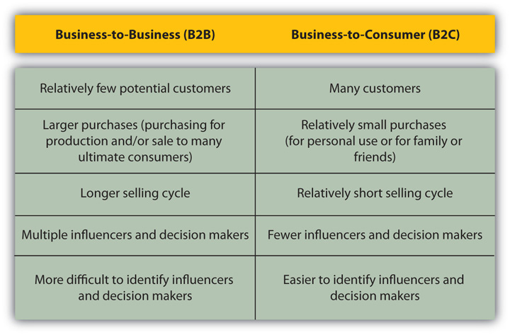
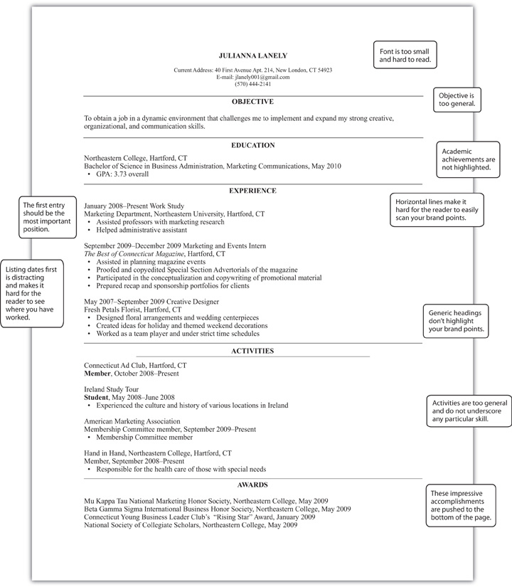
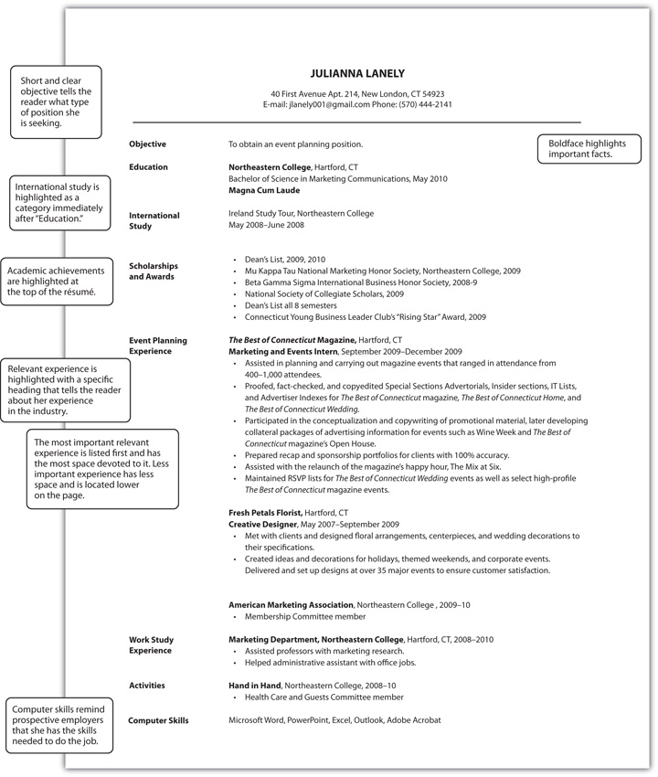
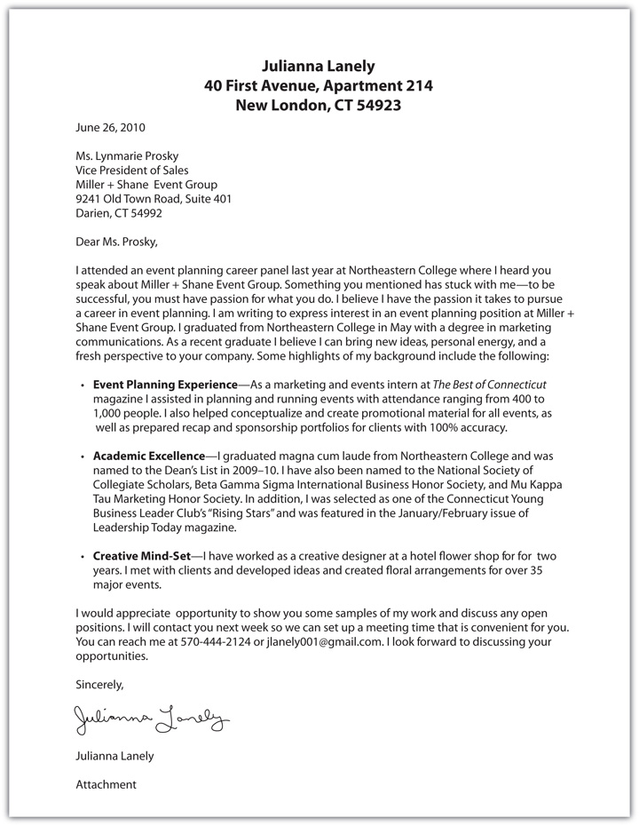
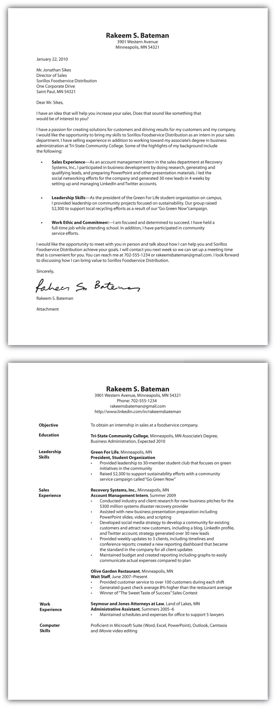

Meet Paul Blake, a senior sales executive. Paul has been in sales for twenty years with roles at various companies including sales rep, sales manager, and now vice president of sales. He is responsible for over forty salespeople and millions of dollars of revenue. He and his sales team sell media solutions, including radio spots, Internet streaming ads, text message campaigns, and more to help businesses build brand awareness and get more customers.
Ride along with Paul and find out what it takes to be a great salesperson and what he looks for when he’s hiring new salespeople.
(click to see video)When Steve Jobs, the CEO of Apple, delivered the commencement address at Stanford University in 2005, he told the story of how he and Steve Wozniak started the now $32 billion company in a garage in 1976. Jobs said, “I was lucky—I found out what I wanted to do early in life.”Steve Jobs, “You’ve Got to Find What You Love,” commencement address at Stanford University, Palo Alto, CA, June 12, 2005, in Stanford Report, June 14, 2005, http://news.stanford.edu/news/2005/june15/jobs-061505.html (accessed June 16, 2009). But life at Apple wasn’t always so perfect. When he was thirty, just one year after the launch of the Macintosh, he was fired from the company he founded. Although he was publicly humiliated and frustrated and didn’t know what to do next, he realized that he indeed loved what he did. From there he went on to start Pixar, the company that created Toy Story, the world’s first full-length computer-animated feature film.
He left the Stanford graduates with some personal words of wisdom to think about as they prepared themselves for their careers: “Your work is going to fill a large part of your life, and the only way to be truly satisfied is to do what you believe is great work. And the only way to do great work is to love what you do. If you haven’t found it yet, keep looking. Don’t settle. As with all matters of the heart, you’ll know when you find it.”Steve Jobs, “You’ve Got to Find What You Love,” commencement address at Stanford University, Palo Alto, CA, June 12, 2005, in Stanford Report, June 14, 2005, http://news.stanford.edu/news/2005/june15/jobs-061505.html (accessed June 16, 2009).
To be successful in sales, and in life, you must love what you do. If you aren’t passionate about your profession, you will never be the best. You will always fall short because the people who love it will naturally excel. It seems simple enough: do what you love. But what if you love many things or don’t know if you’ve found your niche? Don’t worry—there are questions you can ask yourself to help you determine whether a career in sales will excite you and make you want to leap out of bed every morning.
How do you know if sales is your passion, the career of your dreams? The first step is taking this course. You’ll have an opportunity to learn about sales and actually put your knowledge to work in real-life situations by role-playing with your classmates. After reading this chapter, you will better understand the profession of selling and what it has to offer. This chapter includes insights about which personal characteristics and talents are best suited to sales, which industries you might work in, and how you can be successful in the profession.
Just like being a teacher requires traits such as a love of learning, an ability to communicate, and the talent to make concepts come alive for people, selling calls for certain personal characteristics as well. Some people think that successful salespeople are those who have the “gift of gab,” but that’s not really what makes salespeople effective. Although communication and relationship building are valuable skills, just being able to talk to people is not enough to be successful in sales. Consider the following points that make a salesperson successful and see if these are a good match to you and your skills.
It never goes without saying that character—the combination of your beliefs, tendencies, and actions that you take—is the single defining trait for a salesperson (or any business person, for that matter).Dave Kahle, “The Four Characteristics of Successful Salespeople,” Industrial Distribution 97, no. 4 (April 2008): 54. Your character defines how you will conduct yourself, and it is the yardstick by which customers measure you. After all, your customers are spending their money based on what you say you will deliver; they have to trust you. If you ever break the trust for any reason, you will likely lose not only the sale, but you will most likely lose your reputation, and, ultimately, your livelihood. According to a survey by Forrester Research, trust and believability are so important in the buying and selling processes that 71 percent of buyers based their decisions on these traits.Robert W. Bly, “Everyone Loves a Story,” Target Marketing 32, no. 6 (June 2009): 23. See why Jake Nickell, founder, and Jeffrey Kalmikoff, chief creative officer, of Threadless.com think that being trusted by the customer makes a great salesperson.
The Founders of Threadless.com on the Importance of Trust in Selling
The most successful salespeople know how to engage their customers in a way that helps the customers identify for themselves the way the product or service offered can deliver value. The Xerox Company, after conducting a survey to identify the characteristics of their peak-performing salespeople, says it best: “Your prospect will never buy because you present a pitch. She instead buys from what she convinces herself of. This means that if you are selling a watch, telling your prospect you will cure his ignorance of time will not be enough. Your prospect will literally talk to himself to discover that this watch will indeed keep him from running late. He will not listen to you; he will only listen to himself.”Kerry Johnson, “Five Characteristics of Peak Sales Performers,” Event Solution International, http://www.eventsolution.com/education/businessarticles.html (accessed June 16, 2009).
A good salesperson will use his personal skills to connect with a customer, so that their conversation prompts and echoes the customer’s own internal thought process. It is ultimately this ability to connect that allows the salesperson to build relationships and trust. This video highlights how a motorcycle trip, passion, and connecting led to a sale with Harley-Davidson.
Interview with Jim Cathcart, President, Cathcart Institute
Learn how a motorcycle trip led to a sale.
Contrary to popular belief, speaking is not the most important aspect of selling—listening is, because “salespeople are communicators, not manipulators.”Monroe Porter, “Six Common Characteristics of Successful Salespeople,” Pro 20, no. 6 (May 2008): 33. It’s interesting to note that many of the salespeople who are constantly talking are actually not successful. It is those salespeople who have a genuine interest in listening who learn precisely what the customers’ needs, priorities, and opportunities are. Listening skills are the fundamental basis for forming a connection. “Listening builds relationships,” according to Marjorie Brody, author of Help! Was That a Career-Limiting Move? She suggests a “silent solution” to many problems in the form of listening.Pamela J. Holland and Marjorie Brody, Help! Was That a Career-Limiting Move? (Jenkintown, PA: Career Skills Press, 2005). The challenge for many people is that listening with undivided attention is hard to do. According to Barry J. Elms, CEO of Strategic Negotiations International, psychologists say that we listen using only 25 percent of our brain.Steve Atlas, “Listening for Buying Signals: Missing Your Prospects’ Buying Signals,” Selling Power 20, no. 2, http://www.sellingpower.com/content/article.php?a=5350 (accessed March 16, 2010). That means that the other 75 percent is thinking about a response or thinking about something else. Salespeople who take notes, refer to written material, and are intently aware of their nonverbal cues can be extremely successful because they see and hear things that people who are talking just can’t absorb.Steve Atlas, “Listening for Buying Signals: Missing Your Prospects’ Buying Signals,” Selling Power20, no. 2, http://www.sellingpower.com/content/article.php?a=5350 (accessed March 16, 2010). See why Andy Taylor, CEO of Enterprise Rent-A-Car, thinks great listening skills make a great salesperson.
Andy Taylor, CEO of Enterprise Rent-A-Car, on Listening Skills
It was Einstein who said, “If I had an hour to solve a problem and my life depended on it, I would use the first fifty-five minutes to formulate the right question because as soon as I had identified the right question, I knew I could solve the problem in less than five minutes.”Kim Michael, “The Most Powerful Tool in the Sales Arsenal—Part 1,” American Salesman 54, no. 6 (June 2009): 3. This demonstrates the power of asking the right questions. Those questions can only be asked when you listen and have the ability to connect. Paul Blake, whom you met at the beginning of this chapter, believes that asking the right questions is vital to the success of his sales force. That’s why he leads by example and always asks one key question when he is interviewing candidates for sales positions: “Do you believe you have the right to change someone’s opinion?” That single question tells him all he needs to know about the candidate and how she would perform on his sales team.Paul Blake, interview with the author, Greater Media Philadelphia, Philadelphia, PA, December 11, 2009.
You might think that just because you are in school, you are learning everything you need to know for your career. Although you are building a strong foundation, you will continue to learn new things every day when you are working. Salespeople must not only have product knowledge and understand the buying and selling process; they must also learn skills that will make them more effective and efficient as salespeople. For example, in one study on salespeople, executives mentioned that salespeople must be willing to learn more than what appears to be required. Financial skills, negotiating skills, and even speed-reading courses were mentioned as additional training needs.John F. Tanner, Jr., Christophe Fournier, Jorge A. Wise, Sandrine Hollet, and Juliet Poujol, “Executives’ Perspectives of the Changing Role of the Sales Profession: View from France, the United States, and Mexico,” Journal of Business and Industrial Marketing 23, no. 3 (2008): 193. It’s important to note that besides constantly learning new skills, salespeople have to be students of the business. Skills and abilities are developed and fine-tuned over time, and experience plays a role in the learning process. So it stands to reason that salespeople are not “made” simply because they have the title. Just as it takes seven years to become a doctor, three years to become a lawyer, and a thousand hours to become a barber, a great salesperson develops over time.Margaret Norton, “Is the Successful Salesperson Made or Born?” EzineArticles, http://ezinearticles.com/?Is-the-Successful-Sales-Person-Made-Or-Born?&id=1020044 (accessed June 16, 2009). If you’re thinking about pursuing a career in sales, keep in mind that like other professions it takes time, training, and experience to be successful.
You can’t be successful if you don’t set goals. Great salespeople set goals for themselves, achieve them, and celebrate those achievements. They visualize what they want, then put together a plan to get it.Kelley Robertson, “10 Characteristics of Successful Salespeople,” Business Know-How, http://www.businessknowhow.com/marketing/successful-salesperson.htm (accessed June 16, 2009). The drive to succeed is important not only in sales, but also in life. Consider Olympic swimmer Michael Phelps. He set out to do something that no one else had ever done: win eight Olympic gold medals. It’s instructive to look at his drive to succeed and what he did to prepare for and achieve his goals. While Phelps has had some recent public relations (PR) challenges about his behavior out of the pool, it doesn’t diminish his hard work, drive to succeed, and accomplishments.
There are now three generations in the work force: baby boomers (born 1946–1964); Gen X (1965–1980); and Gen Y, also known as millennials (born after 1980). According to a recent survey by the consulting firm Generational DNA, 42 percent of Gen X sales reps exceeded their sales goals while 37 percent of Gen Y and only 32 percent of baby boomers exceeded their goals. But everything is relative as the survey also revealed that boomers are more likely to have more ambitious goals, which is a reflection of their experience level.Geoffrey James, “Which Generation Is Best at Selling?” BNET, July 29, 2009, http://blogs.bnet.com/salesmachine/?p=4424&page=2 (accessed July 27, 2009).
It’s important to remember that you will hear “no” more frequently than you hear “Yes, I’ll take it.” That challenge, however, is offset by the thrill of victory when the sale is made and a relationship with the customer based on trust is built. You can only succeed when you go the extra mile, by investigating one more lead, going back for the second sales call even when the first hasn’t been successful, and trial closing even if you are not sure you can really get the sale.Dave Kahle, “The Four Characteristics of Successful Salespeople,” Industrial Distribution 97, no. 4 (April 2008): 54. It’s the eternal optimism that pushes you, even when others might think there is no reason to pursue the sale. If you think you can make it happen, you should definitely be in sales.
Has anyone ever told you, “You won’t know until you try”? That statement is especially true in sales. You can set yourself apart by taking smart business risks. Think about how you consider taking risks in everyday life and how they pay off. For example, let’s say you are from a small town and you chose to go to a college in a big city because you wanted to experience something new. That was a risk; it took you outside your comfort zone. But if you hadn’t taken the risk, you would have never known what life in a big city was like. Great salespeople go beyond the norm to explore and test the waters. For example, making phone calls to senior executives that you have never met, networking with people you don’t know, or making a presentation to a room full of customers all involve some level of risk. But getting out of your comfort zone and taking risks is how great opportunities are found.Dave Kahle, “Characteristics of a Successful Professional—A Propensity to Take Risks,” Agency Sales 36, no. 6 (June 2006): 40.
Taking risks in life and in selling is best summed up by Lisa McCullough, a high-profile stuntwoman: “Don’t focus on your fears, focus on what you want.”Lisa McCullough, “Lessons from a Stunt Woman,” video, Selling Power, http://www.sellingpower.com/content/video/?date=3/23/2007 (accessed March 16, 2010).
Taking Risks
Lisa McCullough shares her thoughts on taking risks in this video.
“No risk, no reward” is a familiar saying. But best-selling author Jeffrey Gitomer says, “No risk, no nothing.” He believes the only way to succeed is to take risks and sometimes fail. It’s the failures that can lead to success.Jeffrey Gitomer, “No Risk No Reward,” video, May 17, 2008, http://www.youtube.com/watch?v=UBHBk-A4a5M (accessed August 28, 2009). He talks about the importance of taking risks and failing in this video.
Why Taking Risks Is Important to Success
It may sound intuitive that successful salespeople shouldn’t be afraid to ask for a customer’s order, but you would be surprised at how often it happens. Most customers want you to ask for their order. “Would you like fries with your hamburger?” “What can I get you for dessert?” and “Would you like to pay with credit or debit?” are all examples of salespeople asking for the order.
A large percentage of the time these salespeople are successful and meet their customers’ needs at the same time. You reduce your chances of being successful if you don’t ask for the order.Monroe Porter, “Six Common Characteristics of Successful Salespeople,” Pro 20, no. 6 (May 2008): 33. In other words, if you don’t ask for the order, someone else will. See why Fred Franzia, founder of Bronco Wine Company and creator of “Two Buck Chuck” wine, thinks that asking for the order makes a great salesperson.
Fred Franzia, Founder of Bronco Wine Company, on Asking for the Order
Most sales positions require independence, self-motivation, and discipline. Although these traits may seem contradictory, they are actually complementary. Independence is especially important if you are calling on customers in person. It usually requires travel, either locally by car or by plane, which means that you have to be able to manage your time without being told what to do. In fact, it means that you set your schedule and do what you need to do to meet your sales goals. But having this kind of independence requires discipline. As Michael Janusz, an account manager at ACL Laboratories put it, “I went into sales because of the dynamic environment, competitive aspect, and income potential. I do think there is a shortage of good salespeople. I think this is because it takes a unique blend of skills and a disciplined person. There are many people who can talk well, manage a territory well, or work hard. However, not many can put it all together.”“What Do Salespeople Want?” BizTimes, March 30, 2007, http://www.biztimes.com/news/2007/3/30/what-do-salespeople-want (accessed June 19, 2009). Besides having an independent streak, salespeople must be focused and hardworking in the long term, or they will not enjoy consistent success over time.
Along with the need for independence comes the importance of flexibility. Just as you are able to set your own schedule, you have to be flexible based on your customers’ needs. Most sales positions are not nine-to-five jobs. That means you might be working nights or weekends, or you might be traveling out of town during the week or even long periods of time, especially if you are selling internationally. You have to be available when your customers want to buy. Before you cringe at the prospect of grueling hours and long flights, remember that this kind of schedule may also work to your advantage. You may have some weekdays off, which allow you to enjoy family, sports, or other outings that you might not otherwise have an opportunity to enjoy.
If you’re not passionate about what you’re selling, how do you expect your customers to believe in you and your product? You have to love what you do, believe in it, and feel passionately about it. Passion encompasses all the traits mentioned above; it’s how they all come together. Passion is the element that sets you apart from other salespeople and makes your prospects and customers believe in you and your product or service. See why Selena Cuff, head of Heritage Link Brands, thinks passion is what makes a great salesperson.
Selena Cuff, Heritage Link Brands on Passion
If this seems like a lot of traits, think about the list of traits that might be required to be a doctor, lawyer, or college professor. Every profession requires a lot of those who pursue it. To make it easier, you may want to think about how these traits come together. Mahan Khalsa, founder of FranklinCovey Sales Performance Group and author of Let’s Get Real or Let’s Not Play: The Demise of Dysfunctional Selling and the Advent of Helping Clients Succeed, sums up the traits of a successful salesperson this way: “There are three traits that define a successful salesperson: business intelligence (IQ or intelligence quotient), the ability to create rapport and build trust (EQ or emotional intelligence), and a good way to approach and to follow up sales (XQ or executional intelligence; the ability to execute the sale).”Mike McCue, “Lessons from the Master,” Sales and Marketing Management, March 1, 2008, 22–24.
Want to know what employers look for when hiring a salesperson? This video features Mary Delany, chief sales officer at CareerBuilder.com, discussing what she looks for in candidates for sales positions.
Interview with Mary Delany, Chief Sales Officer at CareerBuilder.com
Learn about the characteristics of a great salesperson.
It’s All about Their Stuff
Mark Bozzini, CEO of Infinite Spirits, learned a powerful selling lesson early in his career. His job was to sell more bottles of wine than were sold the previous year, which seemed easy enough. But when he called on a wine and spirits retailer, the storeowner told him that his products didn’t sell and he would rather not have them on his shelves. So much for selling more bottles of wine. An average salesperson might become pushy, or even leave and seek a sale elsewhere. But Bozzini, an intuitive and passionate salesman, was determined to make the sale. He spent an hour rearranging the store display and asked the storeowner to give it a chance to see if the product sold better. The new display worked, and the storeowner became one of Bozzini’s best customers. The moral of the story: always remember that “the customer doesn’t care about your stuff. They care about their stuff.”Anna Muoio, “Sales School,” Fast Company, December 18, 2007, http://www.fastcompany.com/magazine/19/one.html?page=0%2C2 (accessed June 23, 2009).
The role of a salesperson can be summed up in one sentence: “Salespeople are value creators.”John F. Tanner, Jr., Christophe Fournier, Jorge A. Wise, Sandrine Hollet, and Juliet Poujol, “Executives’ Perspectives of the Changing Role of the Sales Profession: View from France, the United States, and Mexico,” Journal of Business and Industrial Marketing 23, no. 3 (2008): 193. To further describe what this means, think about a recent visit to the Apple Store. If you go to the store at virtually any hour, it is filled with customers. The salespeople are not just those that are pushing a product, hoping that you buy so that they make their sales quota. They are experts who know everything about the products in the store whether they be MacBooks, iPods, or iPhones. The salespeople engage you in dialogue, listen, and learn about what you are looking for. They ask questions like, “What do you do with the photos you take? Do you like to make videos? Do you want to easily access the Web from your phone?” No techno-talk, no slick sales pitches. They just want to know what’s important to you so that they can let you try the product that not only fits your basic computing needs, but blows you away.
Apple and its sales team know that computers are complicated and can baffle even savvy users. To build trust and confidence with their customers, they developed the “Genius Bar” so that Apple users know that they can always to talk to an individual and find help with any problem or question they may have. In fact, Apple dedicates a section of their Web site to the Genius Bar and invites customers to make an appointment online to come to a store to talk to one of the “resident Geniuses.” Talk about creating value. As a result, Apple is able to charge a premium for its product and generate such demand that in some cases people are lined up to buy their products, as was the case for the launch of the iPhone 3GS in June 2009.Brandon Griggs, “iPhone 3GS Launch Has App Developers Seeing Gold,” CNN.com, June 19, 2009, http://www.cnn.com/2009/TECH/06/19/iphone.3gs.launch (accessed June 26, 2009).
While a job in sales can be demanding, it can also be very rewarding in many ways. Even in these days of iPods and Pandora, WII-FMThe acronym for What’s In It For Me. (What’s In It For Me) is a radio station that everyone listens to. It’s not a bad thing to think about what’s in it for you. After all, if you are considering investing your career in the selling profession, you should know what’s in it for you.
The life of a salesperson is never dull. You could be working with a single customer or with multiple customers. You might work in a corporate office, or you might work from your home. You might talk to customers via phone, live chat, instant message, and text, or you might meet with them in their office in your neighborhood, your region, or anywhere around the world. You might be working on research to identify new customers, preparing a presentation for a new or existing customer, meeting with customers face-to-face, following up to get contracts signed, or communicating inside your organization to be sure all goes well to deliver the product or service to the customer on time and on budget. On any given day you might be working on any number of activities to support an existing customer or to approach, present, or close a new customer.
A job in selling can be a gateway to wherever you want to go. Stanley Marcus, the ninety-three-year-old chairman emeritus of Neiman Marcus, started as a messenger boy, then as a junior salesperson in his father’s store before working his way to the top. Michael Dell started by selling computers from his dorm room.Anna Muoio, “Sales School,” Fast Company, December 18, 2007, http://www.fastcompany.com/magazine/19/one.html?page=0%2C3 (accessed June 23, 2009). Selling could eventually give you fame and fortune, but more immediately it can also give you the satisfaction of providing solutions to people, financial opportunity, and even financial independence. Even in today’s challenging economy, these goals are possible.
Sales drive every company’s growth. When you are in sales, you are responsible for the future of the company. That’s why many sales positions offer unlimited income potential. Sales is considered a pay-for-performanceA compensation method in which earnings are determined based on the results that are delivered. profession.Michael Levens, Marketing: Defined, Explained, Applied (Upper Saddle River, NJ: Pearson Prentice Hall, 2010), 186. That means that you are paid based on your performance, which in this case is sales. Your income is commensurate with the amount of sales you generate; simply put, you can make as much money as you want. This is a major difference between sales and most other disciplines. In most sales positions, you earn a salary and perhaps some other elements of compensation, such as a bonus. In sales, you can determine your income because it is usually not limited to a specific number; it is based on the amount you sell. Although this topic is covered in detail in Chapter 14 "The Power of Learning the Ropes", it’s worth noting here that you have the power to determine how much you want to earn when you have a successful career in sales.
If you want to check out base salaries for sales positions in your area or the area in which you would like to work, go to Salary.com and use the Salary Wizard. You’ll be able to see the average salary, bonuses, benefits, and more.
Salary Information
This is a resource to research salary and other compensation elements for different positions in areas across the country.
If you had an accident and broke your leg, you would go to an orthopedic surgeon to have a cast put on it. However, if you had a skin rash you would go to a dermatologist to get relief and clear up the rash. Several doctors may have a role in helping you manage your health, so it makes sense that not all doctors conduct the same procedures. Some perform surgery and others diagnose, monitor, and recommend tests or further steps. Just as doctors play different roles in the health care field, the same is true for salespeople in the business arena. Different people perform different functions in the selling process.
There are two major distribution channelsAn organization or group of organizations involved in the process of making product or services available to customers., or organizations or group of organizations involved in the process of making products and services available to customers in which personal selling is conducted.Barton A. Weitz, Stephen B. Castleberry, and John F. Tanner, Jr., Selling: Building Partnerships, 7th ed. (New York: McGraw-Hill Irwin), 10. Personal selling involves communication between a customer and a salesperson with the intention of providing information for the customer to make a buying decision. Business-to-businessBusinesses selling products or services to other businesses. (also referred to as B2B) is when businesses sell products or services to other businesses for consumption by the ultimate consumer. For example, Whirlpool sells washers and dryers to Sears and makes them to the specifications determined by Sears for the Kenmore name before they are sold in Sears and K-Mart stores. Other examples of B2B selling include parts or ingredients, such as when Intel sells computer chips to Toshiba to manufacture laptop computers or when a fabric company sells cotton fabric to Gap to make their T-shirts.
Many B2B companies, such as Intel, have branded their products so that these products are quickly identified by consumers even though the products are only sold to businesses. These companies believe so strongly in the power of branding (which you learned about in Chapter 1 "The Power to Get What You Want in Life") that they are willing to invest in building the awareness and perception of their brand name despite the fact that you can’t go to a Web site or store and buy their product; you can only buy their product because it is a part of another product.
On the other hand, the transactions in which you as a consumer participate are business-to-consumerBusinesses selling products or services directly to the ultimate consumer. (also called B2C), which means that a company is selling a product or service directly to you as the ultimate consumer. In the example above, when Sears and K-Mart sell the Kenmore washers and dryers to consumers, it is B2C personal selling. Other examples of B2C selling include a waiter taking your order at a restaurant, a salesperson helping you find jeans in your size at American Eagle Outfitters, or a real estate agent showing you a house.
Some companies engage in both B2B and B2C selling, such as Staples, FedEx, Microsoft, and Geek Squad, since they serve business customers as well as the ultimate consumer. Many manufacturers such as Dove, Coke, and Oscar Meyer don’t actually participate in B2C personal selling, but these brands use B2C marketing to make consumers aware of their brands. Meanwhile, their B2B personal selling organizations focus on selling these products to retailers such as Safeway, CVS, and Sam’s Club (i.e., their customers), which in turn, sell their products in B2C channels to consumers like you.
There are some important differences between B2B and B2C selling. B2B selling engages with fewer customers (which makes sense because there are fewer businesses than there are consumers). At the same time, however, B2B selling involves much larger purchases. Companies purchase parts, ingredients, or supplies to service many consumers, while consumers only purchase a product or service for their own consumption or that of their family and friends. Since B2B purchases are larger in value than consumer purchases, the selling process is usually longer. This is as a result of the size of the purchase, and in many companies, there are multiple people involved in the purchasing decision, as you will learn about in Chapter 6 "Why and How People Buy: The Power of Understanding the Customer".
Figure 2.5 Business-to-Business versus Business-to-Consumer Selling Characteristics
When you go to McDonald’s and a salesperson asks you if you want fries with your order, there is not much involved on the part of the salesperson. In fact, you may not have even considered the person who took your order to be a salesperson. This is a selling situation that matches the needs of the buyer efficiently with the operation, but it doesn’t require a personal relationship or detailed product information to consummate the sale.Gerald L. Manning, Barry L. Reece, and Michael Ahearne, Selling Today: Creating Customer Value, 11th ed. (Upper Saddle River, NJ: Pearson Prentice Hall), 10. The product or service is of low dollar value and no additional contact is required for the sale. This is called transactional sellingEfficiently matches the customer’s needs in an operational manner, and no personal relationship is formed., and it occurs in B2C situations like this one, as well as B2B situations.Charles M. Futrell, Fundamentals of Selling: Customers for Life through Service, 10th ed. (New York: McGraw-Hill Irwin, 2008), 55.
On the other hand, consultative sellingType of selling in which there is a long-term or ongoing relationship between the seller and the buyer and the salesperson provides ideas or solutions to the customer based on customer needs. Also called relationship selling., also called relationship selling, takes place when there is a long-term or ongoing relationship between the customer and the seller, and the salesperson takes on the task of truly understanding the customers’ needs and providing solutions to meet those needs. In this type of selling situation, adaptive sellingSituation in which the salesperson adapts or customizes her selling style based on the behavior of the customer. takes place. This occurs when a salesperson changes selling behavior during a customer call to improve the exchange or outcome.Gerald L. Manning, Barry L. Reece, and Michael Ahearne, Selling Today: Creating Customer Value, 11th ed. (Upper Saddle River, NJ: Pearson Prentice Hall), 12. Consultative selling takes place in both B2B and B2C environments. For example, if you were working with a financial advisor to develop a retirement plan, the advisor would be consulting you on the best ways to save and how to best invest your money. She would adapt to your needs based on your feedback. If you told her, “I don’t want to be in such high-risk investments,” this would prompt her to adapt her selling behavior to better match your needs.
In some cases, the selling relationship goes beyond consultative selling and establishes a true method for mutual benefit; this is called a strategic allianceA business partnership in which all parties have something at risk and have something to gain.. In this situation, sellers and buyers work together to develop opportunities and points of difference that wouldn’t exist without the relationship.Barton A. Weitz, Stephen B. Castleberry, and John F. Tanner, Jr., Selling: Building Partnerships, 7th ed. (New York: McGraw-Hill Irwin), 36. This type of relationship is usually found in B2B environments because a strategic alliance typically involves two companies that have something to gain by each taking an appropriate risk.
For example, before introducing the iPhone, Apple contracted AT&T to be the exclusive service provider. Each company had something to contribute to the relationship, and each one had something to gain. In this case, AT&T pays Apple for each new customer it receives. Apple increases its revenues, and AT&T gains new customers. Both companies had to invest in research and development to make the relationship happen. Both companies “had skin in the game,” so both worked hard to ensure success through public relations, advertising, personal selling, and follow-up customer service. As a result, the relationship has been extremely successful for both parties, as a strategic alliance should be.Leslie Cauley, “AT&T: We’re All About Wireless,” USA Today, July 31, 2008, http://www.usatoday.com/tech/wireless/phones/2008-07-31-att-iphone-stephenson-apple_N.htm?csp=34 (accessed June 25, 2009). It’s important to note that not all strategic alliances are exclusive deals like the iPhone with AT&T. Although the deal between the two companies includes exclusivity until 2010, it’s not definite that exclusivity will expand beyond that.Justin Sorkin, “AT&T Urging Apple to Extend Its iPhone Exclusive Agreement until 2011,” TopNews.com, April 15, 2009, http://topnews.us/content/24841-att-urging-apple-extend-its-iphone-exclusive-agreement-till-2011 (accessed June 25, 2009).
But Do the Customers Like It?
Satisfied customers are the true measure of success in selling. The University of Michigan publishes the American Customer Satisfaction Index every quarter, which measures customer satisfaction in a number of industries. It’s no surprise that in the fast food category, smaller chains led the pack in actual satisfaction scores with Domino’s as the highest-rated larger chain restaurant in the May 2009 survey. McDonald’s, Wendy’s, and Taco Bell also got the thumbs-up from customers.American Customer Service Index, “Rise in Consumer Satisfaction Continues—Now Followed by Other Economic Indicators,” First Quarter 2009, http://www.hotelnewsresource.com/article38884ACSI__Customer_Satisfaction_Rises_Again__Now_Joined_by_Other_Economic_Indicators.html (accessed June 23, 2009).
What is the difference between the salesperson with whom you live-chat on BestBuy.com and the person you talk to in the store? Although both are salespeople for Best Buy, the person with whom you conducted live chat is considered an inside salesperson; the salesperson you spoke with in the store is considered an outside salesperson. Inside salespeople rarely, if ever, meet face-to-face with customers, whereas outside salespeople communicate with customers in a variety of ways, including in-person meetings.Michael Levens, Marketing: Defined, Explained, Applied (Upper Saddle River, NJ: Pearson Prentice Hall, 2010), 184.
For many B2B and B2C companies, the outside salespeopleA salesperson who meets face-to-face with customers and performs a variety of sales functions. An outside salesperson may work with an inside salesperson to serve a customer. are generally the primary drivers of sales and costs of sales, since the outside salespeople travel to meet in person with customers to learn more about their needs, build relationships, and provide consultation and solutions. Inside salespeople usually perform more tactical selling functions such as providing product information (as in the Best Buy example above), following up on details, and keeping the customer informed of basic information.
Companies have traditionally used inside salespeopleA salesperson who performs selling functions such as providing information, taking orders, and following up using communication methods such as telephone, e-mail, text, or fax but does not actually meet with the customer face-to-face. An inside salesperson may work with an outside salesperon to serve a customer. because they are part of a strategy that helps keep selling costs low. Today, many companies are converting outside salespeople to inside salespeople to further reduce selling costs. Advances in technology are blurring the lines between inside and outside salespeople by providing platforms for inside salespeople to be more collaborative and consultative with tools such as video conferences, Webinars, wikis, and more. Traditional thinking is changing, as evidenced in a recent study conducted by the International Data Corporation (IDC), a sales consulting firm, which found that currently 30 percent of revenues are influenced by inside salespeople.Heather Baldwin, “What Does Sales 2.0 Mean for You?” Selling Power Sales Management eNewsletter, March 3, 2008, http://www.sellingpower.com/content/newsletter/issue.php?pc=801 (accessed March 16, 2010). As more companies leverage technology and think differently about customer relationships, the concept of inside and outside salespeople will evolve around the most mutually efficient and beneficial customer relationships, rather than the physical location of the salespeople.
Bad Day
Selling is a challenging profession, especially when you say the wrong thing. If you think you are having a bad day, watch this video to hear about some actual selling blunders. It will make you feel as if your day isn’t so bad after all!
A bad day in sales.
http://www.sellingpower.com/content/video/?date=11/3/2006
Source: SellingPower.com
You have the power to choose your career. Do you want to travel across the country or around the world to meet with customers and understand their needs and develop new business opportunities for your company? Or would you rather be a technical specialist, or a subject matter expert, and talk to customers about exactly how your product or service works? No matter what you want to do, chances are there’s a sales role that you will enjoy. Table 2.1 "Types of B2B and B2C Sales Positions" shows a snapshot of several different types of B2B and B2C sales positions that you might want to pursue and the industries in which you might find them.
Table 2.1 Types of B2B and B2C Sales Positions
| Title | Description | Industries |
|---|---|---|
| Sales representative, account executive, account manager, marketing representative, sales consultant, sales associate |
|
|
| Territory manager |
|
|
| Business development manager |
|
|
| Customer relationship manager |
|
|
| Product specialist, technical specialist |
|
|
| Customer service representative |
|
|
| Telesales representative |
|
|
Just from the summary in Table 2.1 "Types of B2B and B2C Sales Positions", you can see that there are a variety of different types of sales positions in many industries. You might find it helpful to think about the overall roles and functions that each performs. For example, customer service reps and telesales reps are considered order-takersSalespeople who consummate sales by taking orders from customers. because they interact with customers to consummate a sale, but their role does not require planning or consultative selling. On the other hand, positions such as account manager, territory manager, customer relationship manager, and business development manager are order-gettersSalespeople who develop sales through relationship selling and repeat sales. because they actually work to develop a relationship and solve customers’ problems on an ongoing basis.Charles M. Futrell, Fundamentals of Selling: Customers for Life through Service, 10th ed. (New York: McGraw-Hill Irwin, 2008), 11. Sometimes, account managers, account executives, territory managers, and other similar roles perform missionary sellingSalesperson who contacts key influencers and discusses product or service benefits., which means that they call on customers who are not the ultimate purchaser. For instance, if you were a professor and an account manager from a textbook company called on you and brought you a copy of a new book on sales management for next semester’s class, that would be considered missionary selling because the sales rep would be telling you about the textbook, but you are not the ultimate purchaser. In this case, the sales rep is calling on you so that you adopt the textbook, put it on your syllabus, and as a result, your students purchase the textbook.
What’s in a Name?
Nike no longer uses the title “sales rep” for people in their sales force; their titles are now “account executive” and “account manager.” The change in titles is a reflection of their recent change in selling strategy. Nike realized that simply bringing new samples to retailers isn’t enough in this competitive marketplace. They consider planning to be a major part of the selling process, and the sales team plays a key role in planning in two ways: helping customers, such as retailers, plan their business and providing feedback and insights back to Nike to help plan the next generation of products. At Nike, your title says it all.Anna Muoio, “Sales School,” Fast Company, December 18, 2007, http://www.fastcompany.com/magazine/19/one.html?page=0%2C3 (accessed June 23, 2009).
If you are considering a career in sales, the Selling Power magazine “50 Best Companies to Sell For Now” is an excellent resource to identify prospective employers.
Selling Power Magazine
“50 Best Companies to Sell For Now” (subscription required)
You can also learn more about specific descriptions of sales positions by reviewing some job postings on Monster.com, Yahoo! HotJobs, or CareerBuilder.com using sales in the keyword search.
You may have been invited to a “party” at a friend’s or relative’s house to see the new line of Nutrilite Ocean Essentials vitamins and supplements. You have heard good things about the products from your friend. You didn’t realize that Nutrilite also made sports drinks and energy bars. You have a great time trying the products and talking to everyone at the party, so you decide to try the Nutrilite ROC 20 Antioxidant Enhanced Drink Mix, and you order it in three flavors.
You just experienced the direct sellingThe sale of a consumer product or service away from a fixed retail location. process, “the sale of a consumer product or service away from a fixed retail location.”Direct Selling Association, “About Direct Selling,” http://www.dsa.org/aboutselling/what (accessed June 21, 2009). Some of the most well-known direct selling companies are Amway, Mary Kay Cosmetics, Avon, and Pampered Chef. There are over 15 million people in the United States who sell products or services via direct selling, which is almost four times more than twenty years ago. In 2007, the industry generated $30.8 billion in sales in the United States.Alina Cho, “Avon, Mary Kay Making Comeback,” CNN American Morning, June 17, 2009, http://amfix.blogs.cnn.com/2009/06/17/avon-mary-kay-making-comeback (accessed June 21, 2009).
What makes direct selling so appealing is the fact that you can run your own business using the power of an established brand name and without the costs of manufacturing or providing the product or service. More important, you are your own boss. Although direct selling usually requires an initial purchase of products or services, called starting inventory, many direct sellers have been able to supplement their incomes and in some cases make it their full-time job, earning more than six figures a year. Given the opportunities, you probably aren’t surprised to learn that direct selling is growing as a result of the uncertain job market. Recent grads, retirees, and everyone in between are turning to direct selling as a way to safeguard them during the recession. It’s attractive because those who sell or distribute the products (also called independent business owners [IBOs]A direct salesperson who distributes a company’s products or services and earns income based on her sales.) make a percentage on the products they sell.
Popular Career
Learn about the current trends in direct selling.
http://amfix.blogs.cnn.com/2009/06/17/avon-mary-kay-making-comeback/
But direct selling isn’t lucrative for everyone. Not all IBOs maintain their focus and develop their network. It’s hard work running your own business. It takes time, discipline, effort, focus, and passion. In fact, only 10 percent of IBOs work full-time or at least thirty hours a week.Charisse Jones, “Want a Recession-proof Job? Think Direct Sales,” USA Today, May 14, 2009, 1B.
Many direct selling companies engage in network marketing, also called multilevel marketing (MLM)A selling system in which independent business owners recruit people to become IBOs and earn incentives based on the sales of the new IBOs., which allows IBOs to invite other people to sell the products and earn money based on the sales of those they recruited. If you think about the concept of social networking on Web sites such as Facebook, it’s easy to understand MLM. You can expand your network of contacts simply by tapping into the network of your friends; MLM operates on the same principle. If you sell to your friends and they sell to their friends, your opportunity to earn money expands significantly with every contact. So if you were an IBO for The Body Shop and you recruited your friend Jessica to be an IBO, and she recruited her friend Lashanda to be an IBO, you would not only make commission on your product sales, but also on the product sales of Jessica and Lashanda. You can see how being a part of an MLM company can offer significant earning potential.“Multilevel Marketing,” Inc., http://www.inc.com/encyclopedia/multilevel-marketing.html (accessed June 21, 2009).
Unfortunately, there have been some unscrupulous people involved in the MLM business, and some have created pyramid schemesA selling process that involves the exchange of money for recruiting people to participate in a multilevel marketing company without producing sales. This business practice is not sustainable and is illegal in many states. in which many people have lost money. As a result, most states have laws against “pyramiding,” a practice that offers incentives simply for recruiting new members of the network or IBOs. The laws require incentives to be paid only when sales are generated.Federal Trade Commission, “The Bottom Line about Multilevel Marketing Plans and Pyramid Schemes,” http://www.ftc.gov/bcp/edu/pubs/consumer/invest/inv08.shtm (accessed June 21, 2009).
You might want to check out the top multilevel marketing companies worldwide at the Web site noted here.
You’ve now seen how B2B, B2C, and direct selling work. Still, there are some other selling environments that you may also want to explore.
Martha Stewart (Martha Stewart Living Omnimedia), Mark Zuckerberg (Facebook), and Jeff Bezos (Amazon) each had a unique idea for a product or service. And while good ideas are key to building a business, what ultimately made each of these people successful was their ability to sell their idea to their customers and to their investors.
If you have the passion and vision to start your own business, you will need selling skills no matter what business you decide to create. Being an entrepreneur can be exhilarating, invigorating, and exciting. But it can also be challenging, time-consuming, and frustrating. That’s why successful entrepreneurs, like successful salespeople, plan, do their homework, listen to customers, and make ideas and solutions come alive. It’s no surprise that the traits of a successful salesperson discussed earlier in this chapter are the same traits that are required of an entrepreneur. Just like the different types of sales positions covered previously, there are virtually unlimited types of businesses that can be started by entrepreneurs. Consider the fact that the Internet levels the playing field because it provides business opportunities to all businesses regardless of size. Many of these entrepreneurial business opportunities were not available even a few years ago (and will undoubtedly provide new opportunities that don’t even exist yet). So whether you are a Power Seller on eBay or a dog-walker in your neighborhood, you have the power to start the business of your dreams. This course will give you the invaluable skills and the insights necessary to do so. In fact, Chapter 15 "Entrepreneurial Selling: The Power of Running Your Own Business" is devoted entirely to entrepreneurial selling.
Does technology eliminate the need for salespeople, or does it create opportunities to connect the dots between the company and the customer? Are salespeople more important domestically or globally? Is there a different expectation for global selling? Although these are complex questions that could take an entire course to address, you might find it helpful to know that the outlook for personal selling both in the United States and internationally is very strong. According to a study of executives from the United States, France, and Mexico, “Personal selling is not going to go away and the future looks bright.” Furthermore, the study found that with the use of technology, and in many cases because of it, it’s even more important that salespeople not only know the product and the customer, but also the industry and the environment. The diversification of product lines and customers’ needs for ancillary products such as service agreements, maintenance contracts, and multilingual options, make a skilled salesperson even more important in the transaction.John F. Tanner, Jr., Christophe Fournier, Jorge A. Wise, Sandrine Hollet, and Juliet Poujol, “Executives’ Perspectives of the Changing Role of the Sales Profession: Views from France, the United States, and Mexico,” Journal of Business and Industrial Marketing 23, no. 3 (2008): 193.
Companies expand internationally for several reasons, one of which is that business in the United States is extremely competitive, so companies need more opportunities to increase sales and profits. In some cases, the only opportunity for growth is to expand internationally. But international selling presents an additional level of challenges, including cultural, political, legal, demographic, and economic issues. Nonetheless, countries such as Brazil, Russia, India, and China, often referred to as the BRIC nations, are quickly transforming the global economy. China and India account for one-third of the world’s population, and so they represent a huge opportunity for global companies.George E. Belch and Michael A. Belch, Advertising and Promotion: An Integrated Marketing Communications Perspective, 8th ed. (New York: McGraw-Hill Irwin, 2008), 653–57. It’s likely that a company for which you sell will be doing business internationally, and if it’s not now, it will be some time soon. Some global companies include a one- to three-year sales assignment based in a foreign country.
Nonprofit organizations are those that use their proceeds to reinvest in the cause and are granted “tax-exempt” status from federal and other taxes.Carter McNamara, “Starting a Nonprofit Organization,” Free Management Library, http://managementhelp.org/strt_org/strt_np/strt_np.htm#anchor516676 (accessed June 23, 2009). Religious organizations, charitable organizations, trade unions, and other specifically defined organizations may qualify as nonprofit.Internal Revenue Service, “Tax Information for Charities & Other Non-Profits,” http://www.irs.gov/charities/index.html (accessed June 23, 2009). In fact, your school may be a nonprofit organization.
You might be wondering what selling has to do with nonprofit organizations. The fact is that fund-raising and the development of endowments are actually the lifeblood of nonprofit organizations. Your school may have a director of alumni relations and development. This is the person who secures donations for the continued development of the school and facilities; for example, if your school needs a new athletic facility or classroom building, much of the funding would likely come through the alumni office. Just like for-profit businesses, selling is the engine of nonprofit organizations as well. If you have a passion for a particular cause, such as the green movement, breast cancer, literacy, or education, among others, and want to focus on making a contribution by choosing a career in the nonprofit sector, you can find selling opportunities at many organizations. Although you may want to volunteer for some organizations before you make a career choice, there are paying career fund-raising and development positions in the nonprofit sector. Check out these Web sites to see jobs and job descriptions in the nonprofit sector.
Learn more about nonprofit job opportunities and job descriptions.
Opportunity Knocks
http://www.opportunityknocks.org/
Idealist
Nonprofit Job Scoop
Think about how you first learned about the new Palm Pre smartphone or that Gatorade had changed its name to simply “G.” How did you know that Pre had even more capabilities than the iPhone or that Gatorade was “moving to the next level”? Chances are it was some kind of advertising or public relations that made you aware of these products before you even tried them.
Now think about your personal brand. How will employers know about you and what you have to offer? A résumé and cover letter serve as your “advertising” campaign to prospective employers. Just like there are lots of ads about products and services, there are an overwhelming number of résumésA summary of a person’s background and experience. and cover lettersA one-page letter that acts as an introduction to a résumé. that employers have to review before inviting someone in for an interview. How do you make yours stand out? How do you increase your chances of being one of the people who are interviewed? How do you use your cover letter and your résumé to get the job you want?
There are a few important steps to follow to create the résumé and cover letter that will make you different and compelling to a prospective employer. You will use both of these to apply for jobs online and to send to people with whom you are networking, and you will even send them directly to companies for whom you would like to work. You only have an instant (think nanosecond) to make a lasting impression. If you think you only need a résumé to get a job, you should think again. Your cover letter can play an even more important role than your résumé. Here are some steps to help you create a cover letter that gets read and a résumé that gets you the interview. If you already have a résumé and cover letter, it’s worth reviewing this section because you will learn some important tips to improve them.
Looking for the right job to start your career is a process that includes preparing your résumé and cover letter, getting your cover letter and résumé to the right people, going on interviews, and negotiating and accepting the right offer. You are at the beginning of the process; you’ll learn about the rest of the process throughout the Selling U sections in this book. This section focuses entirely on creating your résumé and cover letter. Keep in mind that the only purpose for a résumé and cover letter is to get an interview. So your résumé and cover letter need to be crafted in a way that tells what your personal brand has to offer, or your brand storyThe highlights of what your personal brand has to offer to prospective employers., in a concise and compelling way.
If this sounds familiar, it should be. This was covered in detail in Chapter 1 "The Power to Get What You Want in Life", but it is such an essential concept that it deserves repetition here. If you haven’t identified your three brand points, you should go back and review the section. Your brand points are actually the foundation of your résumé and cover letter; it is in their summary that you compose your brand story.
You might think of creating a résumé that is a chronological summary of your background. This is good, but it is not compelling enough to differentiate yourself amid the sea of résumés. There are two important things to remember when creating your résumé:
Let’s say your three brand points are leadership experience, academic excellence, and community service. Those three brand points make up your brand story, the story that you want to tell about yourself, so your résumé headings should highlight these areas.
To see what this means, review the two versions of the same résumé for Julianna Lanely in Figure 2.7 "Standard Résumé" and Figure 2.8 "Standard Résumé Incorporating Brand Points". The first one was written using a standard résumé approach; the second one was built by incorporating her brand points of marketing and event planning experience, academic excellence, and creative mind-set. Can you see the difference? Which résumé do you think is more compelling? Before you create (or refine) your résumé, identify your three brand points.
Figure 2.7 Standard Résumé
Figure 2.8 Standard Résumé Incorporating Brand Points
Now that you have the foundation of your résumé message (or your three brand points), it’s time to choose a résumé format. Executives in all industries encourage students and young professionals (those who have been working for five years or less) not to exceed one page for your résumé. In some cases, it may be difficult to keep all of your experience and accomplishments to one page, so choose those that best tell your brand story. As one executive said, “It better be worth my while to turn to page two.”Connie Pearson-Bernard, “Careers in Communications Night,” presentation at West Chester University, West Chester, PA, March 23, 2009.
There are several appropriate résumé templates available at your campus career center or in Microsoft Word. The downside to some templates is that they are difficult to adjust or adapt. The most important thing to consider when you are choosing your résumé format is to be sure it is easy for the reader to skim. Some formats with horizontal lines separating the categories, or those with dates that precede company and position information, are harder to skim because the reader has to work too hard to see the brand story. See the comments in Figure 2.7 "Standard Résumé" to recognize some things to avoid in your résumé.
It’s easy to create a résumé that looks like Julianna Lanely’s revised résumé shown in Figure 2.8 "Standard Résumé Incorporating Brand Points". Simply watch this short video and see how you can format it.
Résumé Formatting
(click to see video)See how easy it is to format your résumé using a table in Word.
Once you choose the format you want to use, you should choose a font that you will use for your résumé and cover letter. The font should be easy to read like Arial or Times New Roman (Arial is a bit more contemporary; Times New Roman is more traditional). It’s best to use twelve-point type (or eleven-point at the smallest) for ease of readability. If you need a little more space on your résumé, consider adjusting the margins slightly, keeping at least 0.7 for each margin. You don’t want your résumé to feel crowded or that it is an effort to read.
Now that you’ve done your groundwork, it’s time to actually create your résumé. Think about your brand points and then determine the headings you want to use. Use headings that help you tell your brand story at a glance. Don’t focus yet on what you will write in each heading; that will be covered in Step 4.
There are some headings that are standard to include such as “Objective,” “Education,” and “Experience,” but other headings should be used to support your brand story. For example, instead of having a heading for “Work Experience,” be more specific and use “Sales Experience” to highlight that if it is one of your brand points.
One of the most critical things to remember is to put the most important things first. Start with a heading for “Objective,” then “Education.” As you gain more experience in your career, your education will move to the bottom. But at this point, it is a key selling point for your brand.
Now, it’s time to put your brand points to work by choosing headings that tell your story. For example, if academic excellence is one of your brand points, you might consider adding a heading after “Education” called “Scholarships and Awards” or “Honors” to highlight honors and awards that demonstrate your academic excellence. This is the ideal place for things like dean’s list, National Honor Society, or any other awards, honors, or scholarships that you have received.
It’s a good idea for your next heading to reflect one of your brand points such as “Leadership Skills” or “Sales Experience” (or any other specific type of experience). If leadership skills are one of your brand points, it’s better to not make the reader go all the way to the bottom of the page to read about your leadership skills under a generic heading called “Activities.” If it’s important to your brand story, bring your skills into focus in the first part of your résumé with a strong heading like “Leadership Skills.” This section could include athletic, school or professional organization, or any other type of leadership position. If you don’t have leadership skills, don’t worry—you still have a lot to offer. Follow your brand points to tell your story.
Next, include your work experience. This is where you can really make your brand story come alive. Don’t be restricted to a traditional chronological order of your jobs. If you have had an internship in marketing, sales, or other area that supports your brand points, make a separate heading for it, such as “Marketing Experience” or “Sales Experience.” If you have had other jobs, you can simply add another heading after it called “Work Experience” below it. Or if your work experience has a common theme, you might want to name your heading “Retail Experience,” “Customer Service Experience,” or “Hospitality Experience.” This approach tells the reader at a glance that you have valuable experience in the area you want to pursue. You should know that employers look for people who have worked in retail and in restaurants because they know that they can sell and work with customers. Use this type of experience to sell yourself.
If you have participated in projects or activities to support the community, you may want to include a heading for “Community Service.” If you have additional activities that are worth noting, you might consider a heading for “Activities.” It’s best to avoid a long list of generic activities at the end of your résumé, so think about how they tell your brand story. It’s best to include your most recent activities. Although you may include some key activities from high school, it’s better if you can replace those with your more recent activities. It’s not necessary to include the dates of your involvement.
It’s a good idea to have a final heading for “Skills” at the end of your résumé. This should include computer software in which you are proficient such as Microsoft Word, PowerPoint, Excel, Access, Adobe Acrobat, and others. It’s a good reminder to your prospective employer that you are skilled for any position. Although it may seem second nature to you to use these software products, there are employers who didn’t learn them in school so they may not be aware that you are proficient in them.
A few things that should not be included on your résumé are “References available upon request,” “Hobbies and Activities,” or a photo. Prospective employers expect to check your references, you should have more substantial things to put on your résumé than hobbies and activities, and many companies cannot consider résumés with photos as it would be considered discrimination.
See Rakeem Bateman’s résumé shown in Figure 2.9 "Standard Résumé Incorporating Effective Headings" to see how headings are used effectively to highlight his brand points of leadership skills, sales experience, and a committed work ethic.
Figure 2.9 Standard Résumé Incorporating Effective Headings

Once you have determined your headings, it’s time to make your brand points come alive with bullet points under each heading. Bullet points are better than a narrative format because they are easier for the reader to skim. But, since the reader is skimming, each bullet point is that much more important. Keep your bullet points concise, but specific, so that each delivers powerful information.
Start with your objective and write a short, specific goal. One sentence is perfect; you don’t have to be flowery or profound. Something that helps the reader understand what you are looking for is best. For example, if you want to get a job in pharmaceutical sales, your objective might be, “To obtain a sales position at a pharmaceutical company.” Or you might want to get a job in an advertising agency so your objective might be, “To obtain a full-time position in account management at an advertising agency.” Short, sweet, to the point, and effective.
For your education, include the formal name of your college or university, city and state, formal degree (e.g., Bachelor of Arts, Communication Studies), and year or expected year of graduation. It’s not necessary to include the range of years you attended school. Now that you are in college, it’s best to remove your high school education. See Figure 2.9 "Standard Résumé Incorporating Effective Headings" for an example of how to list your education. You may be interested to know that your grade point average is not a requirement on a résumé. Generally, if your GPA is 3.5 or above, you may want to include it.Kim Richmond, Brand You, 3rd ed. (Upper Saddle River, NJ: Pearson Prentice Hall, 2008), 156. The fact is most business people don’t recognize the significance of a GPA unless it’s 4.0. So, if academic achievement is one of your brand points, you should consider adding a heading for “Scholarship and Awards” to demonstrate your accomplishments and make them come alive for the reader. If academics aren’t your strong suit, don’t include your GPA; just list your education.Kim Richmond, Brand You, 3rd ed. (Upper Saddle River, NJ: Pearson Prentice Hall, 2008), 156. If you have studied internationally, you might consider a heading or subheading named “International Study.” Include the program name, school, and countries visited, as well as the dates of the travel.
Awards or honors can be listed as bullet points under the “Scholarship and Awards” heading. For experience headings such as “Leadership Experience,” “Sales Experience,” or “Customer Service Experience,” list the name of the company, city and state, your title, and dates of employment. If you use boldface for the company name, it stands out and helps the reader see at a glance where you have worked. The bullet points in these sections are critical to setting yourself apart; they should be concise and specific, but descriptive, and they should focus on accomplishments and contributions, not a listing of activities or tasks. This will most likely take some time to write these bullet points, but it will be time well spent. Consider the difference between these two bullet points to describe a position at a restaurant:
Took orders over the phone and in person
This statement can be more powerful when restated with quantitative details:
Consider the difference between these two bullet points to describe administrative responsibilities at an office:
Filled in for receptionist, answered phones, processed invoices
This line can be more powerful when restated in the following manner:
Consider the difference between these two bullet points to describe responsibilities as a bank teller:
Processed customer transactions
This statement can be more powerful when restated as the following:
Your bullet points should help reinforce your brand points with details of how you delivered on those points. It might be helpful to write down all the things you did at each job and then identify the stories you can tell for each job. This is how you demonstrate traits such as ability to multitask, organizational skills, teamwork, and other skills.
It’s true that some résumés are never even considered because of a typo or grammar error. After you finish your résumé, take a break, and then review it objectively. Does it clearly tell your brand story? Are your brand points the most important topics? If someone read your résumé, what would that person think you have to offer? Make any necessary adjustments. Then spell-check and proofread it carefully. It’s a good idea to ask some people you trust—perhaps at your campus career center, a parent, professor, or mentor—to review and proofread your résumé. You can’t be too cautious.
When you are satisfied that your résumé is perfect, print it on twenty-four-pound paper (you can buy it at your campus bookstore or any office supply store or Web site).
How to Save It
It’s best to save your résumé and cover letter in several formats. A Word document is standard for sending résumés and cover letters. However, online job posting boards remove formatting, so it’s best to also save your documents as .txt files in Microsoft Word (File, Save As, for file type choose “Plain Text (*.txt).” Click OK when the dialogue box appears. Check your document to be sure elements are still in place; adjust accordingly, then save). It’s also helpful to save your documents in PDF format by going to Acrobat.com.Kim Richmond, Brand You, 3rd ed. (Upper Saddle River, NJ: Pearson Prentice Hall, 2008), 224. It’s a good idea to use a file name such as “John Jones Résumé” because it lets the reader know exactly what file he or she is opening and doesn’t give away your working name.Kim Richmond, Brand You, 3rd ed. (Upper Saddle River, NJ: Pearson Prentice Hall, 2008), 226. Avoid file names such as “Official Résumé,” or “Résumé January 2010” as they don’t include your name and are not professional.
If you haven’t prepared a cover letter to send with your résumé, you should consider writing one. According to a recent article in the New York Times, “Cover letters are still necessary, and in a competitive market they can give you a serious edge if they are written and presented effectively.”Phyllis Korkki, “A Cover Letter Is Not Expendable,” New York Times, February 15, 2009, business section, 10. A cover letter is key if you need to set yourself apart, whether you are seeking an internship or a full-time position.
Maybe you are dreading the thought of writing a cover letter. It’s easier than you think, since you have already identified your brand points. Write a summary statement for each of your three brand points. In other words, if you only had one minute to talk about your three brand points, what would you say about each one? Write two concise sentences for each point. It might be rough right now, but it will become the core of your cover letter.
Now you just need to know how to structure your brand story to make it come alive for the reader. A cover letter has three major sections:
Since business people skim cover letters and résumés, it’s a good idea to use boldface to highlight your brand points.Kim Richmond, Brand You, 3rd ed. (Upper Saddle River, NJ: Pearson Prentice Hall, 2008), 162. Take a look at the cover letter in Figure 2.10 "Effective Cover Letter" to see how your brand points become the focus of your cover letter. It’s important to repeat the highlights of your résumé in your cover letter so the reader can see at a glance how you can bring value as a prospective employee. Since you only have a few seconds to “sell” the reader on the fact that you are the right person for the job, you want to introduce the highlights in the cover letter and then provide the details in your résumé. Your cover letter and résumé work together to tell your brand story.
Figure 2.10 Effective Cover Letter
Besides the three core paragraphs of your cover letter, you will also want to know about the appropriate way to format a cover letter. Your cover letter should be limited to a single page and should include the same font that you used for your résumé. See Figure 2.11 "Elements of a Cover Letter" for all the elements of a formal cover letter.
Figure 2.11 Elements of a Cover Letter

With your brand points in mind and the structure of a cover letter clearly defined, now you can get to writing. This is the place where you are able to demonstrate you personality and your selling skills. You can make your cover letter a powerful lead-in to your résumé and sell your prospective employer on the reasons why you should come in for an interview. As with your résumé, be sure to spell-check and proofread your cover letter carefully. Review your cover letter and résumé together to be sure your brand story is clear and powerful. Look at Rakeem Bateman’s cover letter and résumé together in Figure 2.12 "Sample Cover Letter and Sample Résumé" to see how the two documents can work together and really set you apart just at a glance.
Figure 2.12 Sample Cover Letter and Sample Résumé
This cover letter can be the basis of the letter you use for most situations. Now that you have your cover letter, you should adapt it and personalize it for every situation. For example, if you are applying for a job that is posted online, adapt the letter to show how your brand points address the needs of the position. You may even want to create one or two new brand points that also define your brand that you can change based on the job posting.
It’s best to use your cover letter whenever you send your résumé to someone, whether you are responding to a job posting, networking, or sending out letters to your target companies. The Selling U section in Chapter 8 "The Preapproach: The Power of Preparation" includes several ways to get your cover letter and résumé out to prospective employers.
There are five steps that help you write a résumé that stands out from the crowd.
Now that you have read this chapter, you should be able to understand the following opportunities that are available for a career in selling.
Identify whether each of the following is a B2B or a B2C selling channel:
Now it’s time to put what you’ve learned into practice. The following are two roles that are involved in the same selling situation—one role is the customer, and the other is the salesperson. This will give you the opportunity to think about this selling situation from the point of view of both the customer and the salesperson.
Read each role carefully along with the discussion questions. Then, be prepared to play either of the roles in class using the concepts covered in this chapter. You may be asked to discuss the roles and do a role-play in groups or individually.
Trust Me?
Role: Seller of a home
You are the owner of a four-bedroom home in a very nice part of town. The home has a spectacular view and impeccable landscaping. It is decorated so well that everyone who comes over wishes his or her house could look like yours. You and your spouse have decided that you want to sell your home even though the market is soft. You think you have found the real estate agent with whom you want to list the house. You want to get top dollar for your home.
Role: Real estate agent
You are a seasoned real estate agent with a loyal clientele in this part of town. You have a track record of selling very expensive homes and reaping the benefits. You have done very well because of your referral business. But lately, the soft economy has taken its toll on your sales. You believe that keeping the prices as low as possible will attract new buyers.